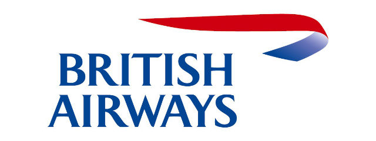

Задание 1-2
| Номер рейса | Тип самолета | Пункт назначения | Статус рейса | Плановое время вылета | Фактическое время вылета | Авиакмпания | Логотип |
|---|---|---|---|---|---|---|---|
| 7K 9517 | Боинг 757-200 | Анталья (Интернэшнл) | Отправлен | 30 сен 15:00 | 30 сен 16:00 | Уральские авиалинии | |
| BA232 | CRJ-200 | Лондон(Хитроу) | Отправлен | 30 сентября 13:40 | 30 сентября 14:00 | BRITISH AIRWAYS |  |
| EY7187 | А320 | Санкт-Петербург(Пулково 1) | Задерживается | 30 сен 17:40 | 30 сен 19:40 | Трансаэро | |
| LX1326 | А319 | Цюрих(Клотен) | Отправлен | 30 сен 17:40 | 30 сен 17:40 | Swiss | |
| BA 8776 (совмещен с S7 1156) | Б 767-300 | Париж(Шарль-де-Голль) | Отменен | Air France |
Задание 3
| Номер рейса | Тип самолета | Пункт назначения | Статус рейса | Плановое время вылета | Фактическое время вылета | Авиакмпания | Логотип |
|---|---|---|---|---|---|---|---|
| 7K 9517 | Боинг 757-200 | Анталья (Интернэшнл) | Отправлен | 30 сен 15:00 | 30 сен 16:00 | Уральские авиалинии | |
| BA232 | CRJ-200 | Лондон (Хитроу) | Отправлен | 30 сентября 13:40 | 30 сентября 14:00 | BRITISH AIRWAYS | |
| EY7187 | А320 | Санкт-Петербург (Пулково 1) | Задерживается | 30 сен 17:40 | 30 сен 19:40 | Трансаэро | |
| LX1326 | А319 | Цюрих (Клотен) | Отправлен | 30 сен 17:40 | 30 сен 17:40 | Swiss | |
| BA 8776 (совмещен с S7 1156) | Б 767-300 | Париж (Шарль-де-Голль) | Отменен | Air France |